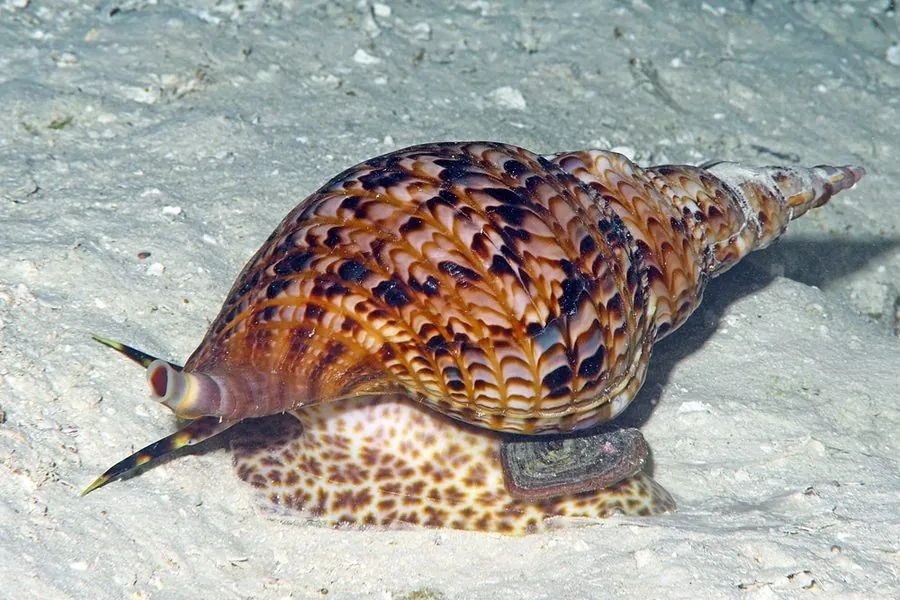

软体动物 · 动物界
大法螺 Charonia tritonis

壳形如号角的巨型海螺，最大壳长可达 60 cm，能捕食棘冠海星，对珊瑚礁生态平衡有重要作用。
- 分类
- 门软体动物门纲腹足纲目中腹足目科法螺科属法螺属
- 栖息环境
- 热带珊瑚礁区的砂底、礁石和珊瑚碎屑间，水深 0–30 m
- 地理分布
- 印度洋至太平洋热带海域，从东非、红海到日本南部、澳大利亚、夏威夷，中国南海及台湾周边有分布
- 保护级别
- 暂无评估
物种志
大法螺的贝壳大型而厚重，呈螺旋状，壳口宽大，壳面有褐白色相间的花纹、纵肋和突起，成熟个体的壳长可达 40–60 cm，是法螺科中体型最大的种类。软体部分藏在壳内，吻部可以伸得很长，齿舌为适应肉食的特化结构。贝壳的内部是漂亮的粉白色，表面常附着珊瑚藻和藤壶。
大法螺分布于印度洋至太平洋的热带珊瑚礁，从东非、红海到日本南部、澳大利亚和夏威夷都有记录，中国南海和台湾周边也有分布，多生活在礁区水深 0–30 m 的砂底和礁石之间。它是肉食性动物，主要捕食棘冠海星，也吃其他海星、海参和双壳类，捕食时把吻部伸入海星体内注入消化液。棘冠海星会啃食珊瑚，一旦暴发就能大面积破坏珊瑚礁，大法螺作为其天敌，被生态学家视为珊瑚礁的“守护者”。它雌雄异体，交配后雌螺产下多个卵囊，每个卵囊含数千粒卵，幼体经过浮游生活后定居。由于贝壳被大量采集制作号角和工艺品，加上渔业捕捞，大法螺数量下降，目前它没有IUCN 的正式评估。
形态与习性
- 食性捕食棘冠海星、其他海星和海参
- 壳长一般 30–50 cm，最大记录约 60 cm
- 栖息深度珊瑚礁区，水深 0–30 m
- 生态作用控制棘冠海星数量，保护珊瑚礁
- 繁殖雌螺产下多个卵囊，每个卵囊含数千粒卵
- 贝壳用途可制作号角、工艺品，是捕捞压力的主要来源
趣味知识
- 大法螺的贝壳可以磨穿吹响，古代被当作号角，太平洋岛民至今仍在使用。
- 它是棘冠海星的主要天敌之一，能吃掉大量暴发的棘冠海星。
- 棘冠海星暴发会啃食珊瑚，大法螺因此被视为珊瑚礁的“守护者”。